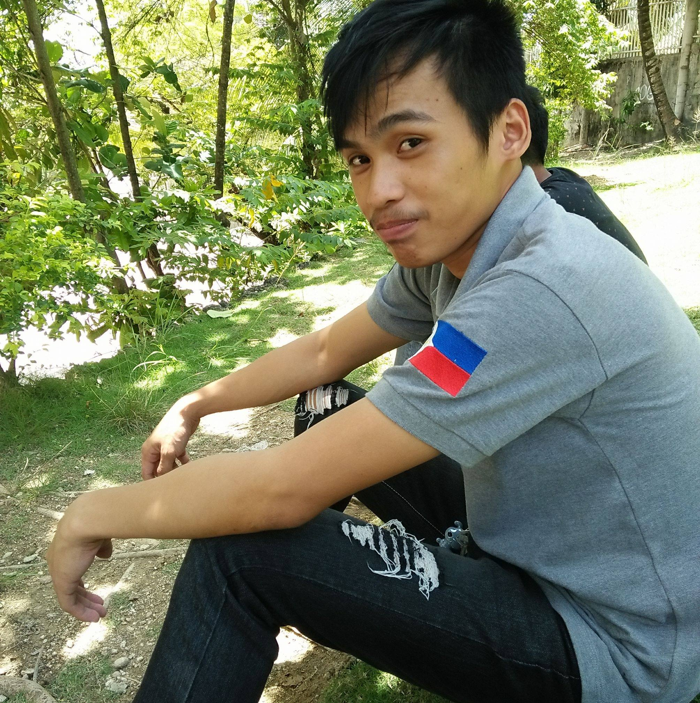

Autobiography
Ray Brandon Bayno
The second of six siblings, my name is Ray Brandon Gemino Bayno, and I was born on Olango Island in Lapu-Lapu City on March 24, 2023. Sherlita Ursal Gemino and Ray Apollo Tutor Bayno were my parents. In 2009, when he was 39 years old, my father suffered a heart attack that was most likely brought on by a lifetime of drinking. Fortunately, I've been wise enough to stay away from that awful behavior.
In the early 2000s, I grew up in a normal lower-class setting. From the time I was born until I turned three, my family used to reside on the island with my grandparents. My mother was a stay-at-home mom, while my father operated sound systems for a living. Back then, I had a contented childhood. Later, when my father developed tuberculosis, we moved to the city's mainland for easier access to medical facilities. When he felt healthy enough, he accepted a position as a traffic cop in Lapu-Lapu.
As our daily necessities could not be met by my father's pay, difficulties began to emerge. Nearly daily, we always ate noodles. There are days when we skip meals because there is nothing on the table. We wait for our father in the hopes that he would have a gift for us. Until he fell ill once more, and this time we lost him. My mom was stunned. She already questions her capacity to raise all of us alone. We were transferred back to the island, where with the help of our grandparents, we continued our education.
To provide for us, my mother looked for employment. But the fact that she couldn't have a secondary diploma made her search even more difficult. She made a brave leap of faith by opting to work in Bulacan, not knowing what would be in store for her. She sold furniture because it was commission-based when she became needy. There will be no food if nothing is sold. She frequently sobbed and looked for work as a housemaid. She prayed, and God heard her, allowing her to meet a good and sympathetic policeman. The man feels sorry for her since he knows about us and the path she has taken. The employer made the decision to pay her fare and provide her an allowance so she could return home.
When my mother arrived home, we were delighted. However, as my father's favorite child, I often experience the isolation of having no one to lean on when I fall. I gave it my all, and when I finished from primary school, I received the highest honor. However, I developed a computer gaming addiction during my high school years, which caused me to drop out of classes. With the help of my grandfather, my mother was able to replace my father's employment as a traffic enforcer. She discovered a new love in a man she believed might improve our life. She drove me back to the city and enrolled me in a night high school, but I failed her since I was once again preoccupied with video games. She put all of her faith in our oldest, sending her to college in the hopes that she would one day be able to give her younger siblings a better life.
My playmate once requested that I sign up for the city's Alternative Learning System. When my mother found out, she brought me to the center to sign me up. I registered and met my girlfriend, who pushes me to succeed in my academic endeavors. We graduated together in 2015, and she provided me with emotional support.
After I graduated, I tried to ask my mother if she would be willing to pay for my college tuition, but she was more concerned about paying for my sister's education. She then permitted me to work at a water station. I feel invisible, which makes life emotionally more difficult. It's fortunate for me that I never lost my network of support, which included my partner. In the year 2020, my girlfriend moved in with me as a warehouseman after landing a job in Mandaue City. Working hard and knowing the procedure cleared the door for our department's management to trust me with challenging duties that site engineers would typically handle. Yes, I did learn a lot.
Just last year, my girlfriend pushed me to go after my dream of going to college in order to better my family's life. After that, I left the business and enrolled in Lapu-Lapu City College. I'm currently enrolled in a Bachelor of Science in Industrial Technology program with a computer technology concentration. Looking forward to a fruitful years ahead.
END Back to Home